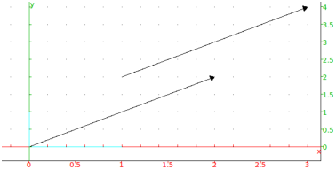
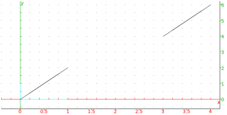

12.6.3 The difference and sum of two points in the
plane:+, -
Let A and B be two points in the plane, with affixes
a1 + i a2 and b1 + ib2 respectively.
Input:
A:= point(1 + 2*i); B := point(3+4*i)
-
The difference B-A returns the affix
(b1−a1)+i(b2−a2), which represents the vector AB.
Input:
vector(A,B); vector(point(0),point(B-A))
Output:

- The sum B+A returns the affix
(b1+a1)+i(b2+a2). If D := point(B+A), then
BD = OA.
Input:
D := point(B + A);
segment(B,D); segment(point(0),A)
Output:

Note that -A is the point symmetric to A with
respect to the origin.
The sum of three points A + B + C can
be viewed as the translate of C by the vector A + B.
So if A or B contains parameters, you should write
this as C + (A + B) or evalc(A + B) + C.